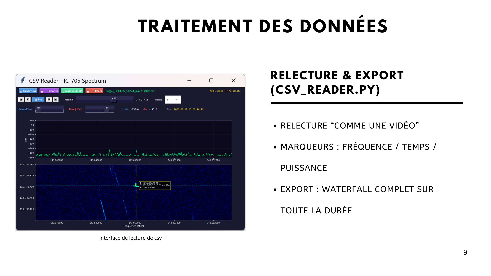
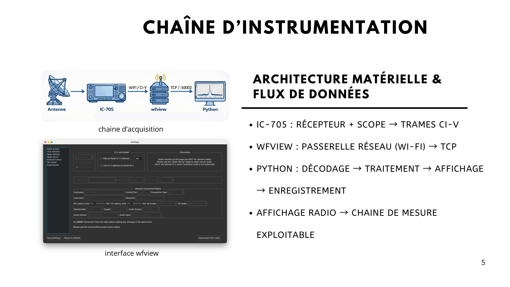
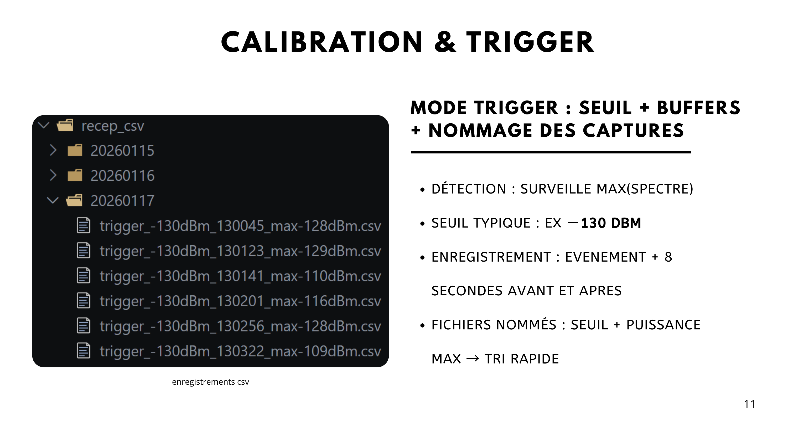

- J'élabore une logique d'essais pour valider la chaîne d'acquisition, d'enregistrement et de relecture.
Radiodétection de météores
Projet tutoré radar GRAVES

Introduction
La compétence Vérifier a consisté à démontrer que la chaîne conçue répondait bien à son objectif principal : détecter, enregistrer et rejouer des événements brefs sans perdre l'information utile à l'analyse.
Les essais ont donc porté à la fois sur la continuité du flux d'acquisition, sur la qualité des enregistrements CSV et sur la capacité du lecteur à restituer les données de manière fidèle.
Vérifier la continuité entre acquisition, affichage et sauvegarde

Le premier niveau de vérification a consisté à s'assurer que la chaîne complète fonctionne sans rupture : réception du signal, transmission des trames, décodage, affichage temps réel puis enregistrement.
- Vérification de la réception continue des trames CI-V.
- Vérification de la cohérence entre le spectre affiché et les données écrites dans le CSV.
- Vérification de la présence des métadonnées utiles pour rejouer la capture.
Contrôler qu'une capture peut être réexploitée sans ambiguïté
Une mesure utile doit rester interprétable après acquisition. Avec mes coéquipiers, nous avons donc vérifié que les fichiers produits permettent bien une relecture fluide, une navigation temporelle et un export de la waterfall complète.
Cette vérification garantit que l'enregistrement ne sert pas seulement d'archive, mais constitue un support d'analyse exploitable a posteriori.
Valider la logique de trigger

Le trigger devait capturer uniquement les événements pertinents tout en préservant ce qui les précède et ce qui les suit. Les essais ont donc porté sur la sensibilité du seuil, sur le comportement du buffer et sur la lisibilité des fichiers générés.
Synthèse
Cette première partie de vérification montre que la solution fonctionne comme une vraie chaîne de mesure. La page suivante se concentre davantage sur les résultats observés et sur la qualité des signatures exploitables une fois l'ensemble validé.